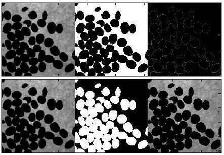
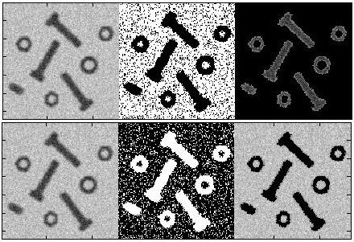
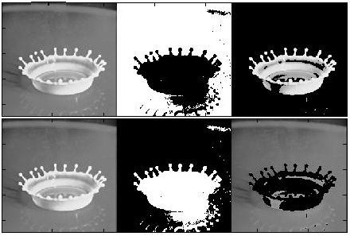
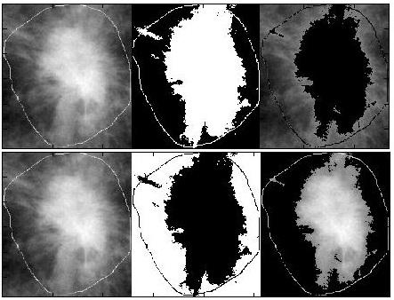
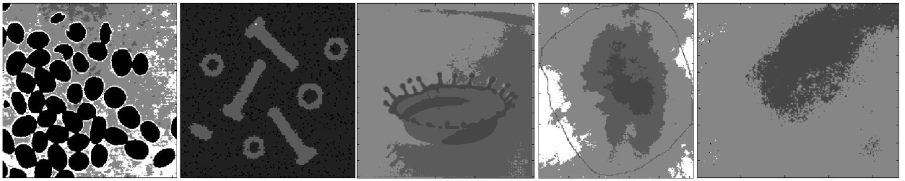
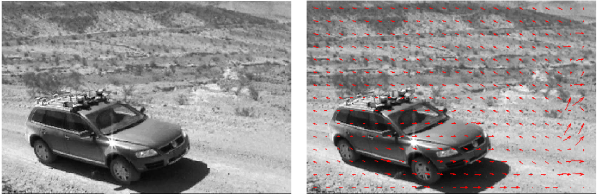
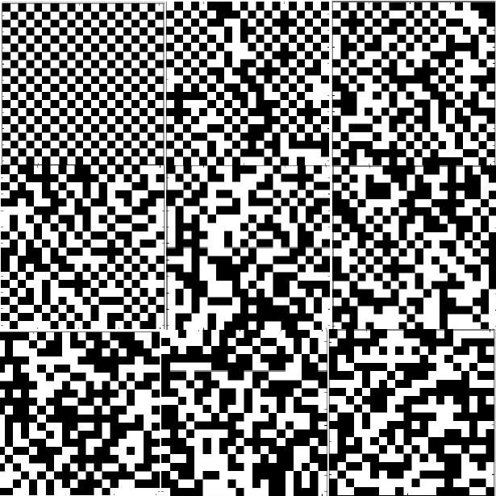
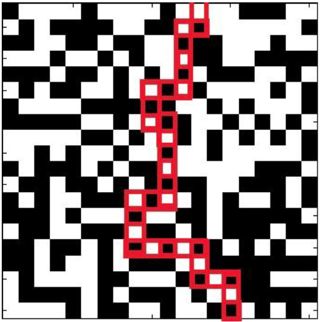

Interest:
I am interested in a position near Boston where I can keep working on research. So far I have been developing my work using C++ and ROOT, a framework used in experimental physics. I am looking for a job where I can learn something new every day. Interested in early stage projects where I can use prototyping tools and my background in electrical engineering. I also enjoy signal processing and data analysis. Ideally looking for teamwork environments.
My curriculum vitae at a glance:
Studies
2011 - 2015
Doctor of Philosophy in Physics
I developed my research in the Daya Bay reactor neutrino experiment, a multinational particle physics project studying neutrinos, the lightest and most abundant known matter particles in the universe.
More info
Despite their mesmerizing amount, neutrino low interaction rates with matter make them hard to detect and study, and the number of unresolved questions involving neutrinos make this field one of the most exciting to work at the moment.
In the Daya Bay experiment I developed my work simulating the detector response to the interaction of an antineutrino with a proton (Inverse Beta Decay), which releases a positron and neutron in a short time window. This pair of particles can be detected by the detectors' photomultiplier tubes after the positrion annihilates with an electron (producing a pair of 5.11 MeV gamma rays) and the neutron is captured on gadolinium or hydrogen nuclei (releasing gamma rays with total energy ~8 MeV or 2.2 MeV respectively). If both signals happen to be inside a specific time window we can determine that an antineutrino has been measured. Nevertheless, there are some background sources that produce similar signals in our experiment. By modeling and measuring their activity we can subtract them from the main antineutrino signal.
The relevance of my work resides on the posibility of finding the neutrino oscillation parameters θ13 and Δmee by designing a shape fit for the mentioned hydrogen signal, providing an independent measurement to the main analysis based on gadollinium capture with a similar amount of events and, thus, this work has the potential of doubling the statistics of our current measurement.
2010 - 2011
Master of Science in Physics
I was selected to participate in a merit-based double degree Master's program with a 50% tuition scholarship at Illinois Institue of Technology.
Physics courses
- Analytical Dynamics
- Quantum Theory I & II
- Statistical Mechanics
- Electromagnetic Theory
- Methods of Theoretical Physics I
- Physics of the Solid State I
- Introduction to Synchrotron Radiation
- Particle Physics I & II
- Computer Vision and Image Processing
2006 - 2011
Telecommunication Engineering
(B.Sc. + M.Sc.)
At Technical University of Madrid I completed an ABET accredited degree in Telecommunication Engineering, a field of study that encompasses:
Electrical Engineering
- Analog electronics circuits
- Digital electronic circuits
- Circuit analysis & design
- Digital electronic systems
- Digital electronic systems lab.
- Electronic circuits laboratory
- Electrical measurement lab.
- Design of electronic circuits & systems
- Communication electronics
- Electronic communication lab.
- Technologies of electronics manufacturing
- Micro-electronics
- Microwaves
- Radiation & propagation
- Optical communications
- Switching
Computer Science
- Computer programming
- Computer programming lab.
- Computer architecture
- Computer technology
- Computer networks
- Communication networks & services I & II
- Systems programming lab.
Signal Processing
- Random signals
- Linear systems
- Theory of communication
- Digital communication
- Data communication
- Transmission systems
- Communication & signals lab.
- Digital signal processing
- Digital signal processing lab.
The Daya Bay experiment
The collaboration is a multionational effort including research institutions from China, the United States, Taiwan, Russia, and the Czech Republic.
The experimental site is situated near a 17.4 GWth nuclear power plant in the south of China, which produces ~1020 neutrinos per second.
A set of 8 antineutrino detectors has been placed to measure the neutrino spectrum distributed equally among the near and far halls.
By calculating the relative electron antineutrino spectrum rates (far/near) we can determine the oscillation amplitude in the electron anti-neutrino spectrum (θ13) using both gadolinium and hydrogen signals.
Furthermore, with our current understanding of the detector response we can even calculate the oscillation effects using spectral shape information, which makes the experiment sensitive to Δmee.
Additional physics goals have been achieved by excluding the parameter-space for a theoretical sterile neutrino, and new results can be expected on a measurement of reactor antineutrino spectrum from Daya Bay data.
Daya Bay experimental site
Daya Bay experimental hall pool
Inside a Daya Bay detector
Projects & Skills
Java
- Algorithms and simulations
- Java was the first programming language I learnt. We had to work on a couple introductory projects: we started developing the Dijkstra algorithm to solve the single-source shortest path problem, also we created a sand-box simulation to analyize the population behavior for two antagonist objects with opposite survival conditions such as rabbits and foxes.
Arduino
- Prototypes
- As a teacher assistant I had the responsibility of designing a section to introduce Arduino systems.
I coded several tutorials, from controlling LEDs,
to counters, music I/O, thermometers and EMF detectors (antennas). The synchronization of different events was explored by building a traffic
light with BCD counters, LEDs and bell ringing controlled with an Arduino.
The student evaluation was very satisfactory.
Prezi presentation for the first class
PDF Instructions for the class
C/C++
- Ph.D. Thesis
- I developed my Ph.D as Dr. Christopher White's research assistant. This dissertation focuses on the analysis of gadolonium
and hydrogen neutron capture signals, the development of a toy Monte Carlo simulation to predict the electron antineutrino energy spectrum
from both signals and also applied to generate systematic, background and statistical covariance matrices that account for the uncertainties
in a covariance matrix χ2 fitter. This fitter was designed and tested to measure precisely the third neutrino mixing angle (θ13).
Tutorial on how to use the GUI to load, generate and plot antineutrino spectra, covariance matrices and responce matrices.
Tutorial on how to use the GUI to run the fitter and plot the χ2 distributions.
- Interactive platform development
- Using the Motorola ColdFire MCF5272 microprocontroller, we developed an interactive game using an array of LEDs as a screen and a keyboard as input. The game, called Piano hero, consisted in a sucession of falling notes displayed in the LED array, the player needed to press the corresponding keys timely, obtaining points according to his performance. The synchronization of different events was the main key of the project. An interface guided the user to choose between the different songs and modes, each song was played using a buzzer and at the end of the game the score could be accessed using an additional LCD screen.
Matlab
- Computer Vision:
-
Image processing algorithms
We developed several image processing algorithms used to segment different kind of images. We analyzed the performance of threshold, K-means clustering, region growing, region splitting/merging and labelling segmentations.

- Computer Vision:
-
Motion stimation
In this project we developed the Block Matching algorithm and studied how its parameters affect the correct estimation of motion. This algorithm is very useful to compress video information by detecting one of the most common features of videos, the very few differences between consecutive frames. It can also be applied in the analysis of object movements.

- Statistical Mechanics:
-
Monte Carlo simulation
I developed my first Monte Carlo simulation to study the percolation properties (Neel temperature, average magnetization and energy) from antiferromagnetic materials in a 2D lattice, following the simple but powerful Ising model, that resembles a stochastic system of cellular automata where the probability of a spin flip is a function of the number of neighbors in the spin up (or down) direction.

HTML & JavaScript
- Personal website
- I learnt HTML and JavaScript to be able to build this webpage from scratch. As an introduction to the language I used
Codecademy and I kept learning by myself according to my needs:
"You learn to code by coding."
Languages
Learning languages is one of my favorite activities, I use online resources such as duolingo to master the basics.
In order of proficiency I can speak:
- Spanish
- Mother tongue.
- English
- Full professional proficiency: In 2010 I completed both TOEFL and GRE tests. After that I have been developing my work in English and living in the United States for the last 5 years.
- Italian
- Conversational.
- French
- Studied 4 years in high school. Basic skills.
- Chinese
- Due to my trips to China I decided to study the language. I enjoy learning how to writing new symbols. Basic -survival- skills.